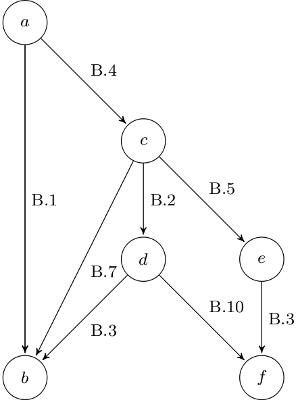

Project Euler is a series of challenging mathematical/computer programming problems that will require more than just mathematical insights to solve. Although mathematics will help you arrive at elegant and efficient methods, the use of a computer and programming skills will be required to solve most problems.
The motivation for starting Project Euler, and its continuation, is to provide a platform for the inquiring mind to delve into unfamiliar areas and learn new concepts in a fun and recreational context.
Today, I would like to discuss problem 142. I've seen a post from Santiago Alessandri, so I liked to do the task by myself.
The task is:
Find the smallest x + y + z with integers $x > y > z > 0$ such that x + y, x - y, x + z, x - z, y + z, y - z are all perfect squares.
I don't want to post the solution (if you want to cheat, I guess you could easily Google it), but some thoughts that might help you to get in the right direction.
First thought: Brute-force
Brute-force is the easiest way that could give you the solution. So I wrote this piece of code:
#!/usr/bin/env python
# -*- coding: utf-8 -*-
import sys
from math import sqrt
def is_square(integer):
root = sqrt(integer)
if int(root + 0.5) ** 2 == integer:
return True
else:
return False
for x in range(3, 1000):
print(x)
for y in range(2, x):
for z in range(1, y):
if x > y and y > z:
if (
is_square(x + y)
and is_square(x - y)
and is_square(x + z)
and is_square(x - z)
and is_square(y + z)
and is_square(y - z)
):
print("%i - %i - %i" % (x, y, z))
sys.exit()
This is quite fast until you reach about 500. So this is not a good way to solve it.
Apply some math
You can formalize the task like this: Find the smallest $x, y, z \in \mathbb{N}$, so that:
- $x > y > z > 0$
- $a = x + y$
- $b = x - y$
- $c = x + z$
- $d = x - z$
- $e = y + z$
- $f = y - z$
With $a, b, c, d, e, f \in Squares$.
Now you can make the following conclusions:
- $\overset{A.1, A.2, A.3}{\implies} a > b$
- $\overset{A.1, A.4, A.5}{\implies} c > d$
- $\overset{A.1, A.6, A.7}{\implies} e > f$
-
$a > c$: $y > z$ $\Leftrightarrow x + y > x + z$ $\Leftrightarrow a > c$
-
$c > e$: $x > y$ $\Leftrightarrow x + z > y + z$ $c > e$
-
a is the biggest element (see B.1, B.4, B.6)
-
$b < c$: $-y < z$ $\Leftrightarrow x - y < x + z$ $b < c$
-
c is the second biggest element (see B.7, B.2, B.5, B.8)
-
$b < d$: $ y > z$ $\Leftrightarrow -y < -z$ $\Leftrightarrow x - y < x - z$ $b < d$
-
$d > f$: $ x > y$ $\Leftrightarrow x - z > y - z$ $d > f$
-
I can't tell anything about the relationship between:
- d and e
- b and f
- b and e
Lets conclude:
{kind=link}

You also know:
$x = \frac{a - b}{2} \implies \text{ (a - b) has to be even} \implies \text{a and b have the same parity.}$ The same argumentation can be used for (c, d) and (e, f).
$x > y > z > 0 \land a = x + y \implies a \geq 5$.
With this in mind you don't have to loop over three variables but only over two. This is much faster. As z is over 1000 you need it. My new script took about 1.5 minutes.
Material
Some material like the LaTeX-file can be found in the Project Euler 142 Archive.